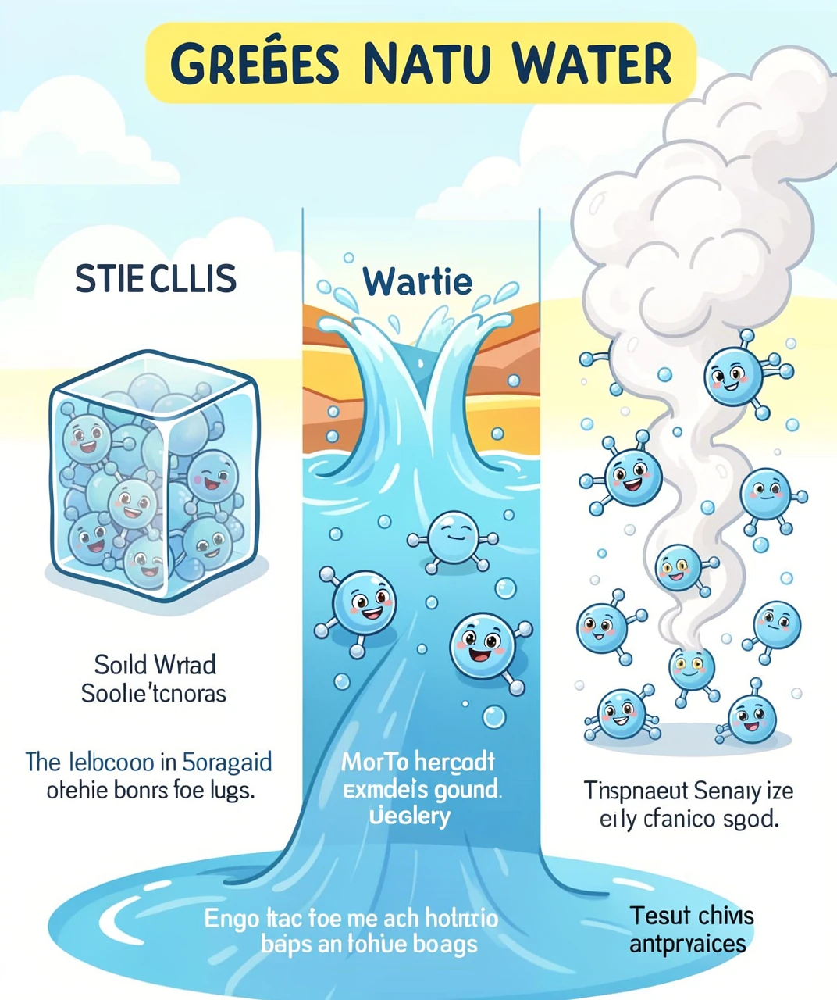
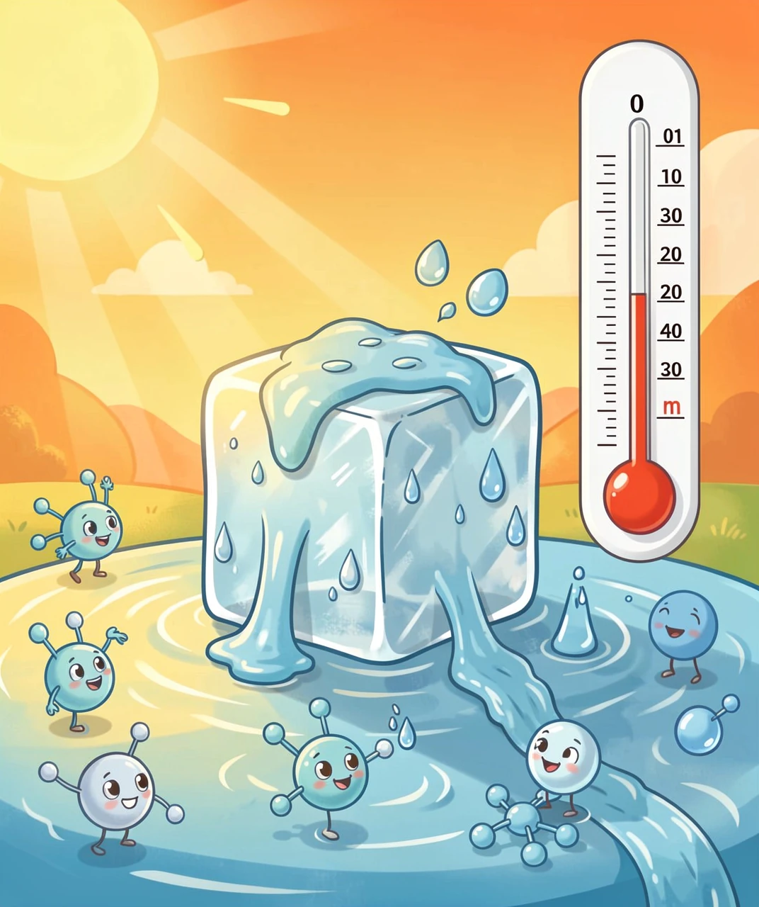
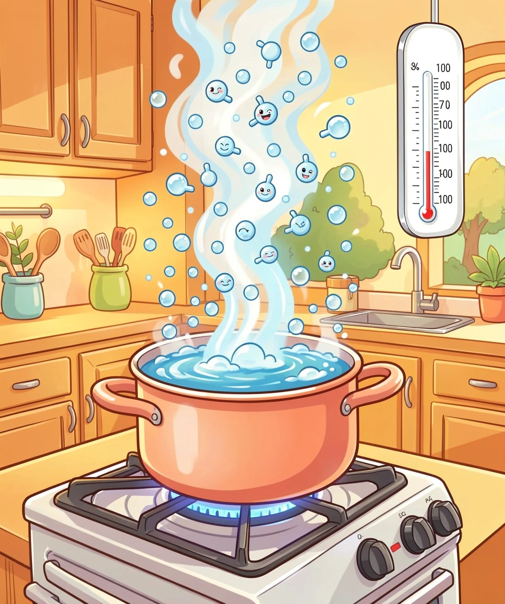
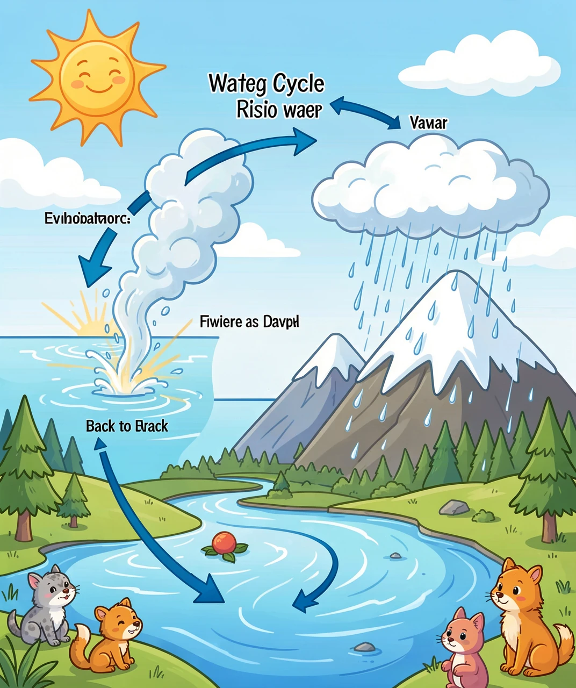
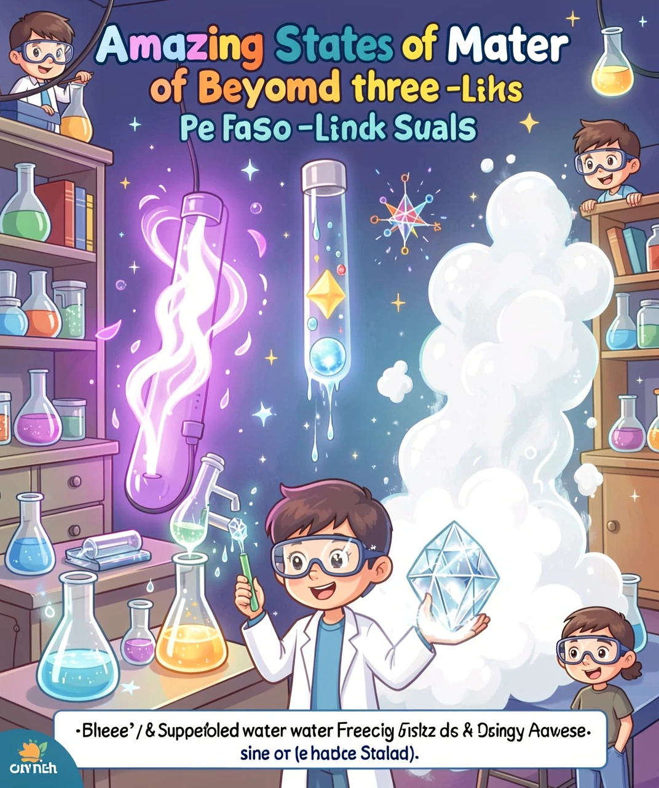

冰、水、汽——同一种东西的三个面孔
你有没有想过，冰箱里的冰块、杯子里的水、壶里冒出的蒸汽——它们其实是同一种东西？没错，都是水！只是水分子在不同条件下"站队"的方式不同，就变出了三种完全不同的样子。这三种样子，科学家叫物质三态：固态、液态和气态。

🧊💧💨 水的三种状态——同一种分子的三种"队形"
想象一下：水分子就像一群小朋友。在固态（冰）里，小朋友们手拉手站成整齐的方阵，谁也不能乱动；在液态（水）里，小朋友们松开了手，互相挤来挤去，但还是聚在一起不肯散开；在气态（水蒸气）里，小朋友们撒欢了！到处乱跑，跑得老远，谁也管不住谁。
是什么让小朋友们从"乖乖站好"变成"到处乱跑"呢？答案是——热量！热量就像是给小朋友们的"能量饮料"，喝得越多，越兴奋，动得越快。
冬天，河面结了厚厚的冰，春天来了，冰又慢慢变成了水。这个从固态变成液态的过程叫熔化（也叫融化）。

🔥 冰在温暖阳光下慢慢融化成水
冰要融化，必须达到一个"门槛温度"——0°C（零摄氏度）。这就是水的熔点。但有个有趣的细节：冰到了0°C并不会立刻全部变成水！它需要继续吸收热量，在0°C这个温度上"停留"一段时间，一边吸热一边慢慢融化，直到全部变成水为止。这段时间吸收的热量叫熔化热。
为什么需要额外吸热呢？因为要把手拉手的水分子"掰开"需要能量！就像你用力掰开两个紧紧握手的小朋友，得花力气一样。熔化热就是用来"掰手"的能量。
洗完的衣服挂在外面，过几个小时就干了——水去哪儿了？变成水蒸气飞走了！水从液态变成气态的过程叫汽化。

💨 水沸腾——液态水变成气态蒸汽
汽化有两种方式：
🌤️ 蒸发——在任何温度下都能发生，只在液体表面进行。湿衣服晾干、水坑变干都是蒸发。温度越高、面积越大、风越大、空气越干燥，蒸发越快。
🔥 沸腾——只在达到特定温度时发生，液体内部和表面同时进行。水沸腾时的温度叫沸点，标准大气压下是100°C。沸腾时你会看到水底冒出大量气泡，咕嘟咕嘟——那些气泡就是水蒸气！
和熔化一样，水到了100°C也不会立刻全部变成蒸汽，需要继续吸热，这叫汽化热。而且汽化热比熔化热大多了！把1克0°C的冰融化成0°C的水需要334焦耳，但把1克100°C的水变成100°C的蒸汽需要2260焦耳——是熔化热的近7倍！因为让分子完全"自由飞翔"比"松开手"需要多得多得多的能量。
物质三态的转变不只是实验室里的现象，它时时刻刻都在我们身边发生，而且驱动着整个地球的水循环！

🌍 地球上的水循环——三态变化的超级大循环
太阳照射海洋和湖泊，水蒸发变成水蒸气上升→水蒸气在高空遇冷液化成小水滴，聚集形成云→小水滴越聚越大，变成雨滴落下来（液化）→如果是冬天高空的极冷空气，水蒸气直接凝华成小冰晶，变成雪花飘落→雨水和融化的雪水汇入河流，最终流回大海→循环重新开始！
看到了吗？这个大循环里包含了所有三态变化：蒸发（液→气）、液化（气→液）、凝固（液→固）、熔化（固→液）、还有凝华（气→固）。大自然就是最厉害的"三态变化实验室"！
| 变化过程 | 状态变化 | 吸热/放热 | 生活例子 |
|---|---|---|---|
| 🔥 熔化 | 固→液 | 吸热 | 冰化水、巧克力融化 |
| ❄️ 凝固 | 液→固 | 放热 | 水结冰、铁水铸件 |
| ☀️ 汽化 | 液→气 | 吸热 | 烧水沸腾、湿衣晾干 |
| 💨 液化 | 气→液 | 放热 | 露珠、眼镜起雾 |
| ✨ 升华 | 固→气 | 吸热 | 干冰消失、樟脑丸变小 |
| ❄️ 凝华 | 气→固 | 放热 | 霜的形成、雪花 |
三态就是全部了吗？当然不是！科学家发现物质还有更神奇的状态：

🔬 超越三态——物质的更多奇妙面孔
⚡ 等离子体（第四态）——给气体加热到极高温度（几千到几万度），气体原子中的电子会被"撕"出来，变成带正电的离子和带负电的电子混合物。这叫等离子体。太阳就是一个巨大的等离子体球！日光灯、霓虹灯里面也是等离子体在发光。宇宙中99%以上的可见物质都是等离子体——所以等离子体才是宇宙的"常态"，我们熟悉的固液气反倒是少数派！
🧊 超冷水——把纯净的水慢慢冷却到0°C以下（可以到-48°C！），如果非常安静、没有扰动，水居然可以不结冰！这叫"过冷水"。但只要轻轻一敲或者投入一粒冰晶，整杯水瞬间结冰——就像按了暂停键突然恢复播放！超冷水在云层中很常见，飞机飞过时可能引发突然结冰，这也是飞机要除冰的原因之一。
🌀 超流体——把液氦冷却到-271°C附近，它会变成一种零黏度的液体，能沿着杯壁往上"爬"出来！没有摩擦力，永远不会停止流动。这叫超流体，是量子力学在宏观世界的神奇表现。
💎 玻色-爱因斯坦凝聚态（第五态）——把原子冷却到接近绝对零度（-273.15°C），所有原子会"合并"成一个超级原子，表现得像同一个粒子。这是爱因斯坦在1925年预言的，直到1995年才在实验室实现！
| 物质状态 | 存在条件 | 有趣特点 |
|---|---|---|
| 🧊 固态 | 常温常压 | 形状和体积都固定 |
| 💧 液态 | 常温常压 | 体积固定，形状随容器 |
| 💨 气态 | 常温常压 | 体积和形状都随容器 |
| ⚡ 等离子体 | 数千度以上 | 导电、发光、受磁场控制 |
| 🌀 超流体 | 接近绝对零度 | 零黏度，能"爬"出容器 |
| 💎 玻色凝聚态 | 接近绝对零度 | 所有原子"合为一体" |
核心规律：温度越高 → 分子运动越剧烈 → 物质从固→液→气→等离子体
以水为例：
🧊 0°C以下 → 冰（固态）
💧 0°C~100°C → 水（液态）
💨 100°C以上 → 水蒸气（气态）
⚡ 几千度以上 → 等离子体
但压力也很重要！高压锅能到120°C水还不沸腾——因为压力越高，沸点越高。珠穆朗玛峰顶气压只有海平面的1/3，水71°C就开了——所以登山者煮面都煮不熟！
从一滴水到整个宇宙，物质的状态变化无处不在。下次当你看到冰块融化、水壶冒汽、草叶上的露珠时，你就知道——这些都是分子们在玩"变身游戏"！而驱动这场游戏的，就是宇宙中最基本的力量之一——热。💧🧊💨✨
💡 答案：1-B 2-C 3-B 4-D 5-A